Naizin · Morbihan (56) · MOSAIC 2013
Map topsoil organic carbon from 198 real observations. This chapter follows the geostatistics lab sequence: exploratory analysis, variograms, ordinary kriging, validation, uncertainty, IDW comparison and field summaries. All displayed figures and numerical outputs come from executing the supplied R blocks.
Teaching sequence adapted from the 2024 Agroecology lab guides by C. Walter and N. Lemoine. Data: MOSAIC 2013, Naizin catchment, 0–15 cm. Data and variable notes.
Complete R script · Input GeoPackage · Kriging raster · Standard-error raster · Field means
Run the analysis
Open an RStudio project at the repository root. Install the packages once with install.packages(c("sf", "terra", "gstat")) (installation help), then run source("scripts/08-advanced.R"). Run source("scripts/08-render-blocks.R") to regenerate the saved figures and console output.
Ordinary kriging assumes an unknown constant mean and a valid spatial covariance model within the study domain. Explore trends, land-use contrasts and influential observations before treating that assumption as appropriate.
8.1 · Read and check the real MOSAIC observations
The 2013 survey sampled the 0–15 cm layer at 198 sites in the Naizin catchment, Morbihan (56). Geometry is kept in Lambert-93, whose distance unit is the metre.
R code
library(sf)
library(terra)
library(gstat)
soil <- st_read("data/vectors/module-08/naizin.gpkg", layer = "soil", quiet = TRUE)
basin <- st_read("data/vectors/module-08/naizin.gpkg", layer = "catchment", quiet = TRUE)
fields <- st_read("data/vectors/module-08/naizin.gpkg", layer = "fields", quiet = TRUE)
elevation <- st_read("data/vectors/module-08/naizin.gpkg", layer = "elevation", quiet = TRUE)
soil$SOC <- soil$Carbon__g_
xy <- st_coordinates(soil)
stopifnot(st_crs(soil)$epsg == 2154, all(is.finite(soil$SOC)),
!anyDuplicated(xy), nrow(soil) == 198)
print(summary(soil$SOC))
print(data.frame(points = nrow(soil), area_ha = as.numeric(st_area(basin))/10000))
plot(st_geometry(basin), col = "#eef2ed", main = "Naizin: soil sampling, 2013", axes = TRUE)
plot(st_geometry(soil), add = TRUE, pch = 21, bg = "#277d82", cex = .8)
legend("topright", "198 topsoil observations", pch = 21, pt.bg = "#277d82", bty = "n")Why these functions? · official R help
all()— Require every checked value to satisfy the numerical condition. In R:help("all", package="base")anyDuplicated()— Detect coincident sampling locations that need investigation. In R:help("anyDuplicated", package="base")as.numeric()— Convert the area object to numeric square metres before converting to hectares. In R:help("as.numeric", package="base")data.frame()— Present computed model diagnostics and error metrics as tables. In R:help("data.frame", package="base")is.finite()— Reject missing or infinite SOC measurements before fitting. In R:help("is.finite", package="base")legend()— Explain point symbols, reference lines and boxplot conventions. In R:help("legend", package="graphics")library()— Load sf for vectors, terra for grids and gstat for variography and interpolation. In R:help("library", package="base")nrow()— Count observations and set the leave-one-out fold count. In R:help("nrow", package="base")plot()— Display maps, fitted variograms, histograms or validation diagnostics using the relevant class method. In R:help("plot", package="graphics")print()— Expose fitted parameters and computed numerical results rather than hiding them. In R:help("print", package="base")st_area()— Measure the catchment area in square metres. In R:help("st_area", package="sf")st_coordinates()— Use actual geometry coordinates to check duplicates and define the eastern holdout. In R:help("st_coordinates", package="sf")st_crs()— Verify the projected Lambert-93 reference system before computing distances. In R:help("st_crs", package="sf")st_geometry()— Draw the feature geometry without automatically plotting every attribute. In R:help("st_geometry", package="sf")st_read()— Read a named spatial layer from the supplied GeoPackage. In R:help("st_read", package="sf")stopifnot()— Stop the analysis when geometry or numerical checks fail. In R:help("stopifnot", package="base")summary()— Report distributions of observations, standardised residuals and field means. In R:help("summary", package="base")
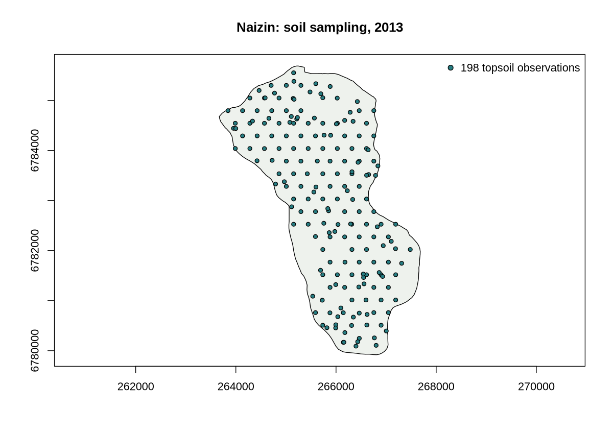
Executed R console output
Min. 1st Qu. Median Mean 3rd Qu. Max. 14.60 23.30 26.35 29.99 31.18 204.00 points area_ha 1 198 1207.365
The geometry has no duplicate coordinates and all 198 SOC values are finite. The survey combines a triangular 300 m design and additional random points. The catchment is about 1207 ha. These are actual measurements in department 56; moving their coordinates to department 35 would misrepresent the dataset.
8.2 · Inspect the distribution before modelling
SOC is expressed in g C/kg soil. Keep the high values visible: they can strongly affect an ordinary variogram and squared prediction errors.
R code
par(mfrow = c(1, 2), mar = c(4, 4, 3, 1))
hist(soil$SOC, breaks = 25, col = "#55968d", main = "SOC: original units", xlab = "SOC (g C/kg)")
hist(log(soil$SOC), breaks = 20, col = "#d3a45a", main = "SOC: log distribution", xlab = "log(SOC)")
par(mfrow = c(1, 1))
boxplot(soil$SOC, horizontal = TRUE, col = "#55968d", xlab = "SOC (g C/kg)", main = "SOC: all observations retained")
legend("topright", c("Box: 25th–75th percentiles", "Line: median", "Circles: beyond 1.5 IQR whiskers"), bty = "n", cex = .85)
print(soil[order(soil$SOC, decreasing = TRUE)[1:5], c("ID_MOSAIC", "SOC")])Why these functions? · official R help
boxplot()— Show median, quartiles, whiskers and flagged SOC values with an explanatory legend. In R:help("boxplot", package="graphics")c()— Collect related values, plotting settings or raster layers. In R:help("c", package="base")hist()— Reveal skewness and the distribution of prediction errors. In R:help("hist", package="graphics")legend()— Explain point symbols, reference lines and boxplot conventions. In R:help("legend", package="graphics")log()— Inspect skewness on the logarithmic scale without replacing the original-unit analysis. In R:help("log", package="base")order()— Display the largest SOC observations so their influence remains explicit. In R:help("order", package="base")par()— Arrange related plots on one figure and restore a single-panel layout. In R:help("par", package="graphics")print()— Expose fitted parameters and computed numerical results rather than hiding them. In R:help("print", package="base")
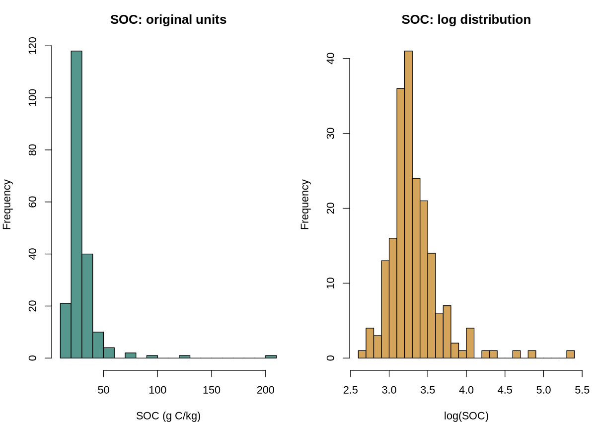
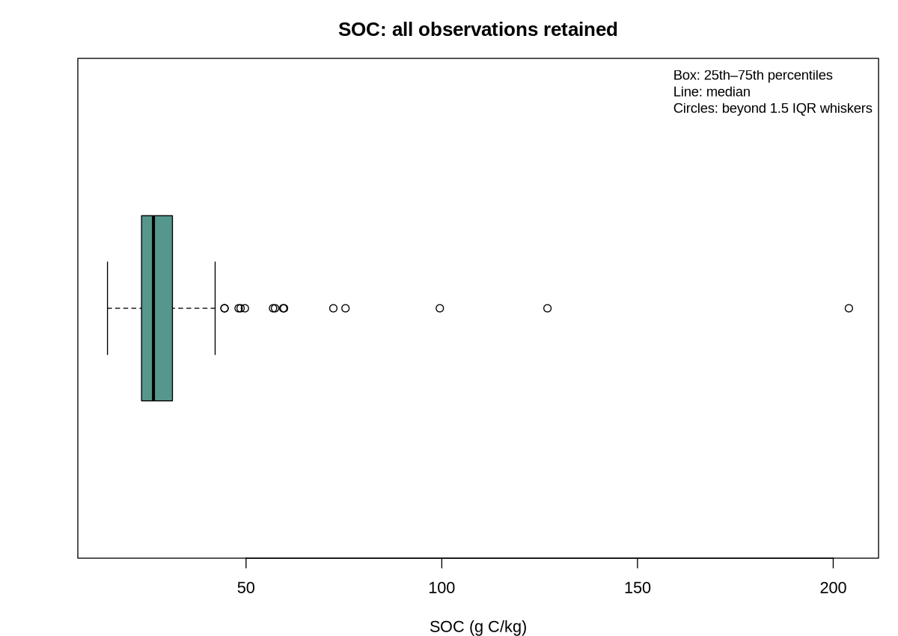
Executed R console output
Simple feature collection with 5 features and 2 fields
Geometry type: POINT
Dimension: XY
Bounding box: xmin: 265589.9 ymin: 6781517 xmax: 266317.9 ymax: 6784291
Projected CRS: ETRS89-FRA [RGF93 v1] / Lambert-93
ID_MOSAIC SOC geom
49 56 204.0 POINT (265755.9 6782546)
62 69 127.0 POINT (265735.5 6783030)
101 108 99.5 POINT (265589.9 6784291)
67 74 75.4 POINT (265599.6 6783270)
26 28 72.3 POINT (266317.9 6781517)
The maximum is 204 g C/kg, compared with a median near 26 g C/kg. A boxplot flag is not proof of an erroneous measurement. Check laboratory records, sampling context and land use before exclusion. A logarithm reduces skewness, but exponentiating a log-kriging prediction gives a conditional median, not automatically an unbiased arithmetic mean. The main analysis below retains all values and stays in original units.
8.3 · A first variogram with elevation
Use the elevation training dataset to practise reading spatial continuity before analysing SOC. Compare an omnidirectional variogram with four directions.
R code
elev_v <- variogram(Elevation ~ 1, elevation, cutoff = 2500, width = 250)
elev_fit <- fit.variogram(elev_v, vgm(100, "Sph", 1500, 1))
print(elev_fit)
print(plot(elev_v, elev_fit, main = "Elevation: spherical variogram", xlab = "Distance (m)", ylab = "Semivariance (m²)"))
elev_dir <- variogram(Elevation ~ 1, elevation, alpha = c(0, 45, 90, 135), cutoff = 2500, width = 250)
print(plot(elev_dir, main = "Elevation: directional variograms", xlab = "Distance (m)", ylab = "Semivariance (m²)"))Why these functions? · official R help
c()— Collect related values, plotting settings or raster layers. In R:help("c", package="base")fit.variogram()— Estimate model parameters from the experimental variogram by weighted least squares. In R:help("fit.variogram", package="gstat")plot()— Display maps, fitted variograms, histograms or validation diagnostics using the relevant class method. In R:help("plot", package="graphics")print()— Expose fitted parameters and computed numerical results rather than hiding them. In R:help("print", package="base")variogram()— Compute semivariance by distance class, optionally separating directions. In R:help("variogram", package="gstat")vgm()— Define starting nugget, partial sill, range and model family. In R:help("vgm", package="gstat")
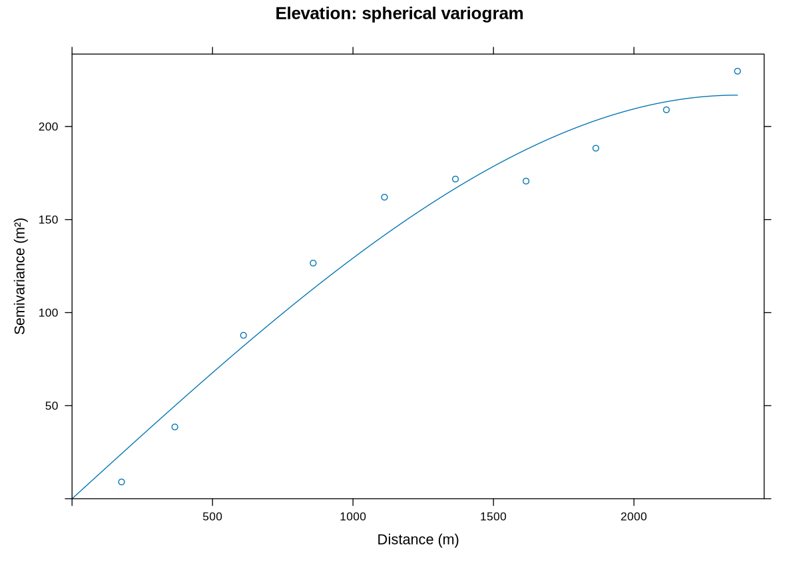
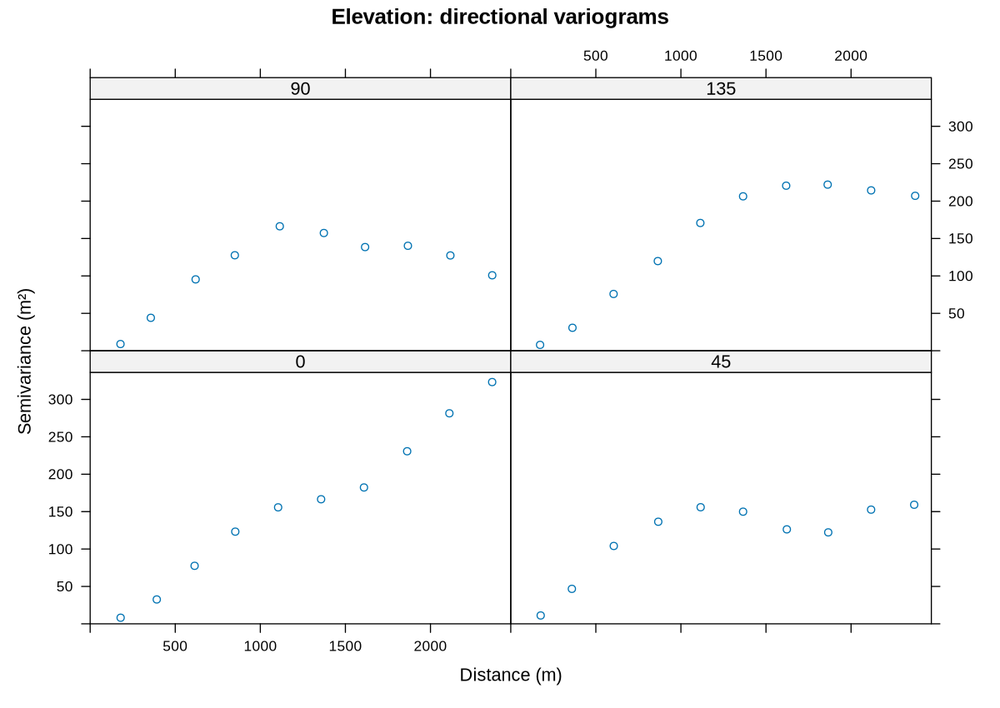
Executed R console output
model psill range 1 Nug 0.0000 0.000 2 Sph 216.8372 2366.113
Semivariance is half the average squared difference between observations separated by a distance class. Directions are clockwise from north. Elevation can show a regional trend: directional differences may reflect that trend rather than geometric anisotropy. Check maps and mean structure before assuming intrinsic stationarity. Do not transfer this elevation variogram to SOC.
8.4 · Fit the SOC variogram
Inspect pair counts and compare two model families using the same 250 m bins and 2500 m cutoff. These are teaching choices to revisit, not universal defaults.
R code
soc_v <- variogram(SOC ~ 1, soil, cutoff = 2500, width = 250)
start_var <- var(soil$SOC)
spherical <- fit.variogram(soc_v, vgm(.7 * start_var, "Sph", 800, .3 * start_var))
exponential <- fit.variogram(soc_v, vgm(.7 * start_var, "Exp", 800, .3 * start_var))
print(soc_v)
print(spherical)
print(exponential)
print(data.frame(model = c("Spherical", "Exponential"),
weighted_SSE = c(attr(spherical, "SSErr"), attr(exponential, "SSErr")),
singular = c(attr(spherical, "singular"), attr(exponential, "singular"))))
stopifnot(!attr(exponential, "singular"), all(exponential$psill >= 0))
model <- exponential
print(plot(soc_v, spherical, main = "SOC: spherical model", xlab = "Distance (m)", ylab = "Semivariance ((g C/kg)²)"))
print(plot(soc_v, exponential, main = "SOC: exponential model", xlab = "Distance (m)", ylab = "Semivariance ((g C/kg)²)"))Why these functions? · official R help
all()— Require every checked value to satisfy the numerical condition. In R:help("all", package="base")attr()— Inspect singularity and the weighted variogram fitting criterion returned by gstat. In R:help("attr", package="base")c()— Collect related values, plotting settings or raster layers. In R:help("c", package="base")data.frame()— Present computed model diagnostics and error metrics as tables. In R:help("data.frame", package="base")fit.variogram()— Estimate model parameters from the experimental variogram by weighted least squares. In R:help("fit.variogram", package="gstat")plot()— Display maps, fitted variograms, histograms or validation diagnostics using the relevant class method. In R:help("plot", package="graphics")print()— Expose fitted parameters and computed numerical results rather than hiding them. In R:help("print", package="base")stopifnot()— Stop the analysis when geometry or numerical checks fail. In R:help("stopifnot", package="base")var()— Set starting variance components using the observed sample variance. In R:help("var", package="stats")variogram()— Compute semivariance by distance class, optionally separating directions. In R:help("variogram", package="gstat")vgm()— Define starting nugget, partial sill, range and model family. In R:help("vgm", package="gstat")
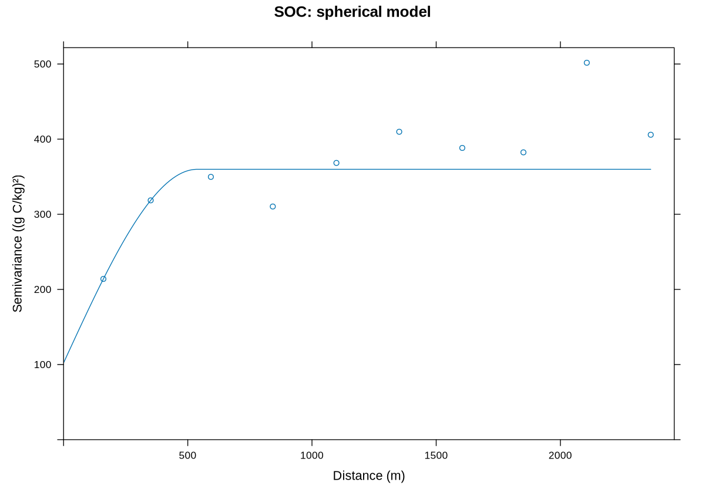
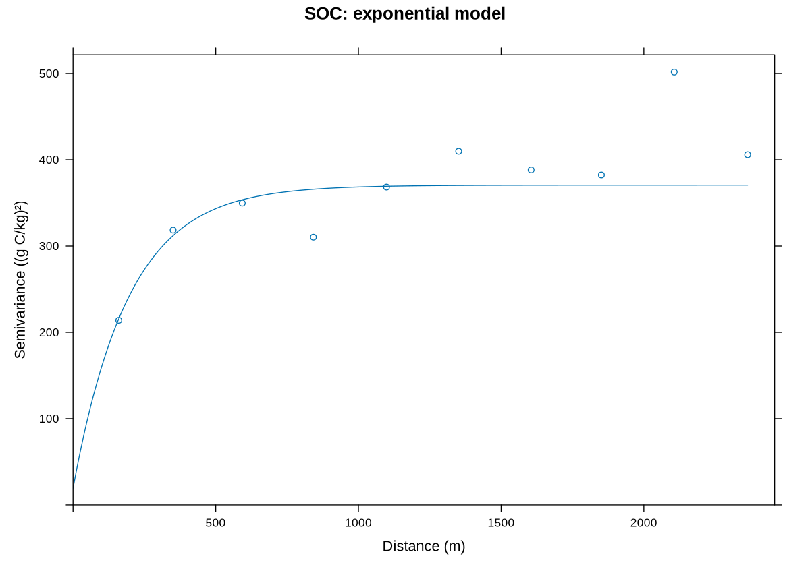
Executed R console output
np dist gamma dir.hor dir.ver id
1 149 160.2323 213.9665 0 0 var1
2 802 350.6394 318.5238 0 0 var1
3 1185 592.9731 349.7822 0 0 var1
4 1508 842.2342 310.3406 0 0 var1
5 1643 1098.3690 368.3371 0 0 var1
6 1662 1351.2424 409.8383 0 0 var1
7 1566 1605.0326 388.2972 0 0 var1
8 1431 1851.2052 382.4160 0 0 var1
9 1422 2106.3527 501.6783 0 0 var1
10 1227 2363.7264 405.8523 0 0 var1
model psill range
1 Nug 102.1852 0.0000
2 Sph 257.6815 537.6546
model psill range
1 Nug 19.23904 0.0000
2 Exp 351.33511 195.4359
model weighted_SSE singular
1 Spherical 15.54154 FALSE
2 Exponential 14.35045 FALSE
The nugget represents unresolved variation and measurement effects; partial sill is the structured variance, and total sill is nugget plus partial sill. For the exponential model the fitted range parameter a is a scale: about 95% of the structured sill is reached at 3a. Weighted variogram SSE is a fitting criterion, not prediction accuracy. We use the exponential family below and check prediction separately. A fitted variogram does not itself establish stationarity or normality.
8.5 · Diagnose prediction with leave-one-out validation
Remove each observation from its prediction neighbourhood while keeping the full-data variogram fixed. Inspect bias, RMSE and the largest residuals.
R code
cv <- krige.cv(SOC ~ 1, soil, model = model, nfold = nrow(soil), nmax = 20)
cv$error <- cv$var1.pred - cv$observed
metrics <- data.frame(method = "OK: conditional LOOCV", n = nrow(cv),
bias = mean(cv$error), MAE = mean(abs(cv$error)), RMSE = sqrt(mean(cv$error^2)))
print(metrics)
print(summary(cv$zscore))
plot(cv$observed, cv$var1.pred, pch = 21, bg = "#55968d", xlab = "Observed SOC (g C/kg)",
ylab = "Predicted SOC (g C/kg)", main = "Conditional leave-one-out diagnostic", asp = 1,
xlim = range(c(cv$observed, cv$var1.pred)), ylim = range(c(cv$observed, cv$var1.pred)))
abline(0, 1, col = "#b9573c", lwd = 2)
legend("topleft", "1:1 agreement", col = "#b9573c", lty = 1, bty = "n")
hist(cv$error, breaks = 25, col = "#55968d", xlab = "Predicted − observed SOC (g C/kg)", main = "LOOCV errors")
write.csv(metrics, "outputs/module-08/loocv-metrics.csv", row.names = FALSE)Why these functions? · official R help
abline()— Add a 1:1 reference to the observed-versus-predicted plot. In R:help("abline", package="graphics")abs()— Calculate absolute residuals and symmetric difference-map limits. In R:help("abs", package="base")c()— Collect related values, plotting settings or raster layers. In R:help("c", package="base")data.frame()— Present computed model diagnostics and error metrics as tables. In R:help("data.frame", package="base")hist()— Reveal skewness and the distribution of prediction errors. In R:help("hist", package="graphics")krige.cv()— Predict omitted observations with the supplied fixed variogram to diagnose prediction errors. In R:help("krige.cv", package="gstat")legend()— Explain point symbols, reference lines and boxplot conventions. In R:help("legend", package="graphics")mean()— Summarise bias or absolute errors, or compute the fraction of cells meeting the stated comparison. In R:help("mean", package="base")nrow()— Count observations and set the leave-one-out fold count. In R:help("nrow", package="base")plot()— Display maps, fitted variograms, histograms or validation diagnostics using the relevant class method. In R:help("plot", package="graphics")print()— Expose fitted parameters and computed numerical results rather than hiding them. In R:help("print", package="base")range()— Set shared colour limits for SOC or shared axes for observed-versus-predicted values. In R:help("range", package="base")sqrt()— Convert prediction variance to standard error and squared errors to RMSE. In R:help("sqrt", package="base")summary()— Report distributions of observations, standardised residuals and field means. In R:help("summary", package="base")write.csv()— Export validation metrics and field attributes for further inspection. In R:help("write.csv", package="utils")
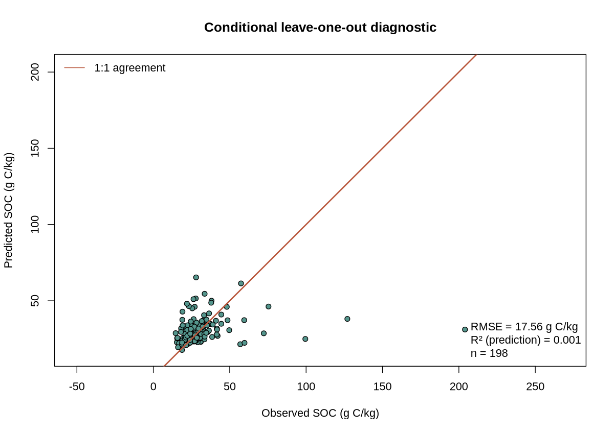
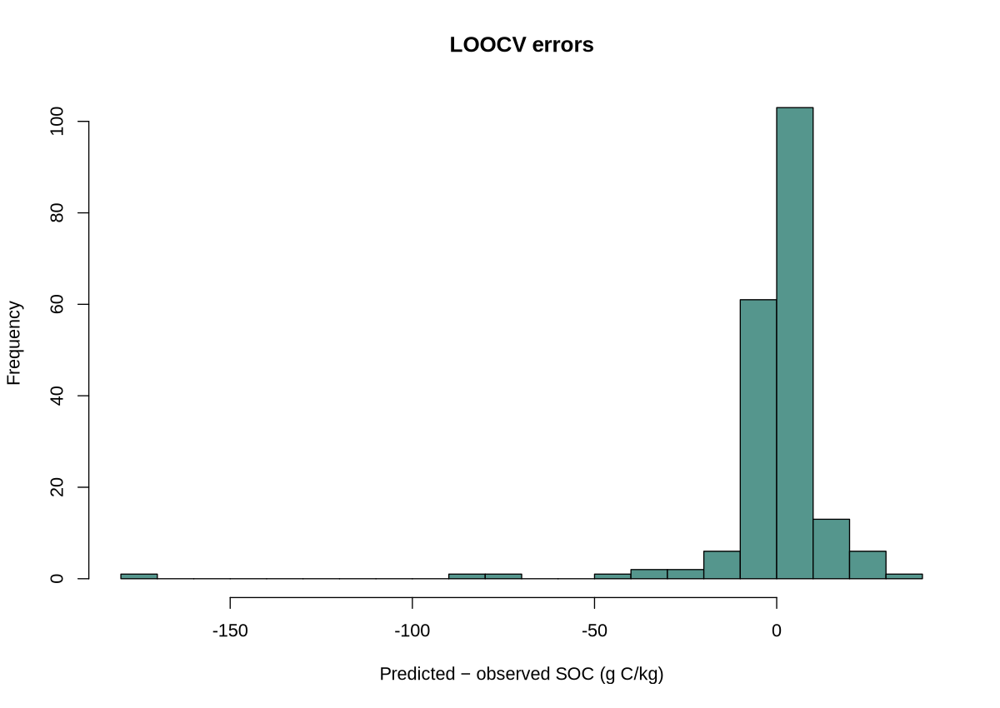
Executed R console output
method n bias MAE RMSE
1 OK: conditional LOOCV 198 -0.08117513 7.805423 17.56237
Min. 1st Qu. Median Mean 3rd Qu. Max.
-2.1390055 -0.3362625 -0.1033704 -0.0003267 0.1367300 10.0121290
This is conditional LOOCV: the variogram was estimated using all observations, including each omitted response. It is a useful diagnostic, but not an unbiased validation of the complete model-building workflow. The high SOC values can dominate RMSE and be underpredicted. Standardised residuals also depend on the validity of the fitted covariance and mean model.
8.6 · Keep a spatial test area apart
Hold out the eastern quarter of observations before fitting the variogram. Compare OK and IDW on exactly these same held-out sites.
R code
east <- xy[, 1] > quantile(xy[, 1], .75)
training <- soil[!east, ]
testing <- soil[east, ]
train_v <- variogram(SOC ~ 1, training, cutoff = 2500, width = 250)
train_var <- var(training$SOC)
train_model <- fit.variogram(train_v, vgm(.7 * train_var, "Exp", 800, .3 * train_var))
stopifnot(!attr(train_model, "singular"), all(train_model$psill >= 0))
test_ok <- krige(SOC ~ 1, training, testing, model = train_model, nmax = 20)
test_idw <- idw(SOC ~ 1, training, testing, idp = 2, nmax = 20)
errors <- list(OK = test_ok$var1.pred - testing$SOC, IDW = test_idw$var1.pred - testing$SOC)
spatial_metrics <- data.frame(method = names(errors), n = nrow(testing),
bias = sapply(errors, mean), MAE = sapply(errors, function(e) mean(abs(e))),
RMSE = sapply(errors, function(e) sqrt(mean(e^2))))
print(train_model)
print(spatial_metrics)
plot(st_geometry(basin), col = "#f0f1ed", main = "Spatial holdout: eastern quarter", axes = TRUE)
plot(st_geometry(training), add = TRUE, pch = 16, col = "#368c87")
plot(st_geometry(testing), add = TRUE, pch = 17, col = "#c77835")
legend("topright", c("Training", "Held out"), pch = c(16, 17), col = c("#368c87", "#c77835"), bty = "n")
write.csv(spatial_metrics, "outputs/module-08/spatial-holdout-metrics.csv", row.names = FALSE)Why these functions? · official R help
abs()— Calculate absolute residuals and symmetric difference-map limits. In R:help("abs", package="base")all()— Require every checked value to satisfy the numerical condition. In R:help("all", package="base")attr()— Inspect singularity and the weighted variogram fitting criterion returned by gstat. In R:help("attr", package="base")c()— Collect related values, plotting settings or raster layers. In R:help("c", package="base")data.frame()— Present computed model diagnostics and error metrics as tables. In R:help("data.frame", package="base")fit.variogram()— Estimate model parameters from the experimental variogram by weighted least squares. In R:help("fit.variogram", package="gstat")idw()— Interpolate by inverse-distance weights using the same neighbourhood limit. In R:help("idw", package="gstat")krige()— Compute ordinary-kriging predictions and conditional variances from the fitted covariance model. In R:help("krige", package="gstat")legend()— Explain point symbols, reference lines and boxplot conventions. In R:help("legend", package="graphics")list()— Keep OK and IDW error vectors together for consistent comparison. In R:help("list", package="base")mean()— Summarise bias or absolute errors, or compute the fraction of cells meeting the stated comparison. In R:help("mean", package="base")names()— Name outputs with their numerical meaning and units. In R:help("names", package="base")nrow()— Count observations and set the leave-one-out fold count. In R:help("nrow", package="base")plot()— Display maps, fitted variograms, histograms or validation diagnostics using the relevant class method. In R:help("plot", package="graphics")print()— Expose fitted parameters and computed numerical results rather than hiding them. In R:help("print", package="base")quantile()— Define the eastern quarter from coordinates without using held-out SOC responses. In R:help("quantile", package="stats")sapply()— Calculate identical error metrics for both interpolators. In R:help("sapply", package="base")sqrt()— Convert prediction variance to standard error and squared errors to RMSE. In R:help("sqrt", package="base")st_geometry()— Draw the feature geometry without automatically plotting every attribute. In R:help("st_geometry", package="sf")stopifnot()— Stop the analysis when geometry or numerical checks fail. In R:help("stopifnot", package="base")var()— Set starting variance components using the observed sample variance. In R:help("var", package="stats")variogram()— Compute semivariance by distance class, optionally separating directions. In R:help("variogram", package="gstat")vgm()— Define starting nugget, partial sill, range and model family. In R:help("vgm", package="gstat")write.csv()— Export validation metrics and field attributes for further inspection. In R:help("write.csv", package="utils")
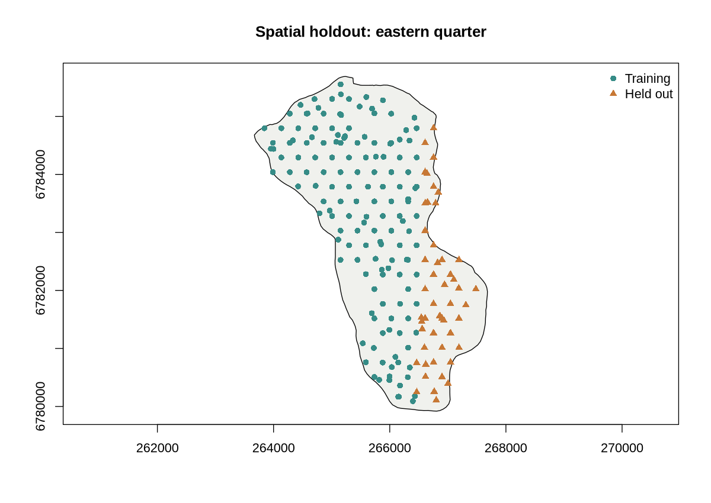
Executed R console output
[using ordinary kriging]
[inverse distance weighted interpolation]
model psill range
1 Nug 0.0000 0.0000
2 Exp 455.3606 166.9671
method n bias MAE RMSE
OK OK 49 -1.028232 6.013378 8.801200
IDW IDW 49 -1.032396 6.005453 8.583503
This split tests prediction into a less sampled eastern sector, a different task from infilling a dense network. The model family and neighbourhood are fixed teaching settings; only training responses fit this variogram. One geographic split is not a universal performance estimate and is not directly comparable with the easier full-network LOOCV. Repeat geographically distinct holdouts before drawing strong conclusions.
8.7 · Predict SOC and its standard error on a 25 m grid
Fit the chosen model on all observations for the final map. Predict at cell centres within the catchment and keep model-based uncertainty separate from the SOC map.
R code
grid <- rast(vect(basin), resolution = 25)
inside <- mask(init(grid, 1), vect(basin))
centres <- as.points(inside, na.rm = TRUE)
new_sites <- st_as_sf(centres)
prediction <- krige(SOC ~ 1, soil, new_sites, model = model, nmax = 20)
idw_prediction <- idw(SOC ~ 1, soil, new_sites, idp = 2, nmax = 20)
stopifnot(all(is.finite(prediction$var1.pred)), min(prediction$var1.var) >= -1e-8)
ok <- inside
se <- inside
idw_map <- inside
valid <- which(!is.na(values(inside, mat = FALSE)))
ok[valid] <- prediction$var1.pred
se[valid] <- sqrt(pmax(prediction$var1.var, 0))
idw_map[valid] <- idw_prediction$var1.pred
names(ok) <- "SOC_g_C_kg"
names(se) <- "kriging_SE_g_C_kg"
names(idw_map) <- "IDW_SOC_g_C_kg"
limits <- range(c(soil$SOC, values(ok), values(idw_map)), na.rm = TRUE)
pal <- hcl.colors(100, "YlGnBu", rev = TRUE)
plot(ok, col = pal, range = limits, main = "Ordinary kriging: SOC (g C/kg)")
lines(vect(basin))
plot(se, col = hcl.colors(100, "OrRd", rev = TRUE), main = "Kriging standard error (g C/kg)")
points(vect(soil), pch = 16, cex = .3)
lines(vect(basin))
print(global(c(ok, se), c("min", "mean", "max"), na.rm = TRUE))Why these functions? · official R help
all()— Require every checked value to satisfy the numerical condition. In R:help("all", package="base")as.points()— Create prediction locations at centres of valid raster cells. In R:help("as.points", package="terra")c()— Collect related values, plotting settings or raster layers. In R:help("c", package="base")global()— Summarise all valid raster cells, with missing cells excluded. In R:help("global", package="terra")hcl.colors()— Choose perceptually organised sequential and diverging map colours. In R:help("hcl.colors", package="grDevices")idw()— Interpolate by inverse-distance weights using the same neighbourhood limit. In R:help("idw", package="gstat")init()— Initialise a 25 m raster with a constant value before masking. In R:help("init", package="terra")is.finite()— Reject missing or infinite SOC measurements before fitting. In R:help("is.finite", package="base")is.na()— Identify cells outside the catchment mask. In R:help("is.na", package="base")krige()— Compute ordinary-kriging predictions and conditional variances from the fitted covariance model. In R:help("krige", package="gstat")lines()— Draw the catchment outline over each map. In R:help("lines", package="graphics")mask()— Restrict valid prediction cells to the catchment. In R:help("mask", package="terra")min()— Reject materially negative prediction variances. In R:help("min", package="base")names()— Name outputs with their numerical meaning and units. In R:help("names", package="base")plot()— Display maps, fitted variograms, histograms or validation diagnostics using the relevant class method. In R:help("plot", package="graphics")pmax()— Protect the square root from tiny negative floating-point variance values. In R:help("pmax", package="base")points()— Overlay sample locations on the uncertainty map. In R:help("points", package="graphics")print()— Expose fitted parameters and computed numerical results rather than hiding them. In R:help("print", package="base")range()— Set shared colour limits for SOC or shared axes for observed-versus-predicted values. In R:help("range", package="base")rast()— Create a 25 m prediction template or reopen an exported GeoTIFF. In R:help("rast", package="terra")sqrt()— Convert prediction variance to standard error and squared errors to RMSE. In R:help("sqrt", package="base")st_as_sf()— Convert the raster cell centres into prediction locations compatible with gstat. In R:help("st_as_sf", package="sf")stopifnot()— Stop the analysis when geometry or numerical checks fail. In R:help("stopifnot", package="base")values()— Read the raster cell values used for summaries and valid-cell indexing. In R:help("values", package="terra")vect()— Convert sf features to terra vectors for masking, plotting and field summaries. In R:help("vect", package="terra")which()— Locate valid catchment cells for inserting prediction values. In R:help("which", package="base")
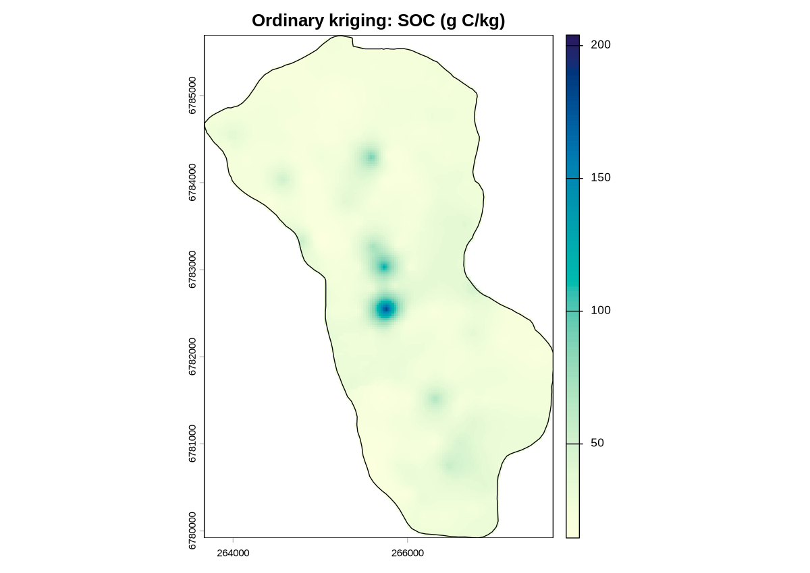
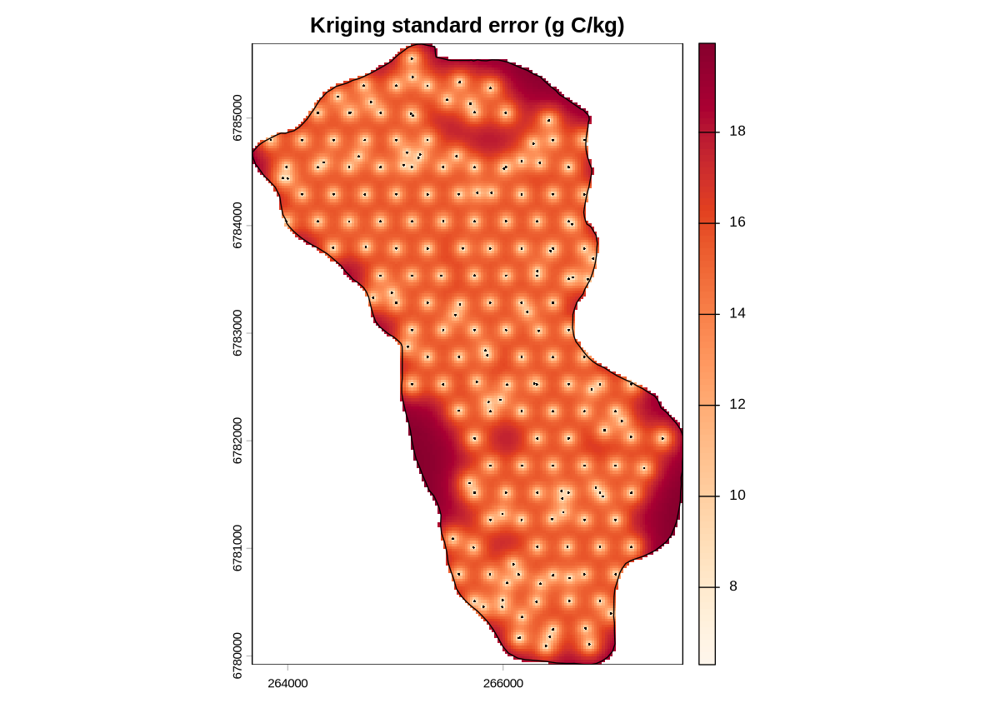
Executed R console output
[using ordinary kriging]
[inverse distance weighted interpolation]
min mean max
SOC_g_C_kg 16.142178 30.01263 182.12126
kriging_SE_g_C_kg 6.300483 14.81537 19.95618
Resolution is 25 m; this does not make the effective information resolution 25 m when sampling is around 300 m apart. SE is conditional on the fitted model and chosen neighbourhood, and omits variogram-parameter uncertainty. It depends on sampling geometry and covariance assumptions, not directly on the local measured SOC. A larger SE indicates greater model-based uncertainty, not proven larger error at that cell.
8.8 · Compare IDW and kriging consistently
Use the same cells, 20-neighbour maximum and SOC colour limits. IDW weights decay with distance squared; it does not use the variogram.
R code
plot(idw_map, col = pal, range = limits, main = "IDW (power 2): SOC (g C/kg)")
lines(vect(basin))
difference <- idw_map - ok
names(difference) <- "IDW_minus_OK_g_C_kg"
bound <- max(abs(values(difference)), na.rm = TRUE)
plot(difference, col = hcl.colors(100, "Blue-Red 3"), range = c(-bound, bound), main = "IDW − kriging (g C/kg)")
lines(vect(basin))
print(global(difference, c("mean", "sd", "min", "max"), na.rm = TRUE))
within_band <- abs(difference) <= 2 * se
print(data.frame(fraction_IDW_within_OK_plus_minus_2SE = global(within_band, "mean", na.rm = TRUE)[1, 1]))
print(global(c(ok, idw_map), c("mean", "sd"), na.rm = TRUE))Why these functions? · official R help
abs()— Calculate absolute residuals and symmetric difference-map limits. In R:help("abs", package="base")c()— Collect related values, plotting settings or raster layers. In R:help("c", package="base")data.frame()— Present computed model diagnostics and error metrics as tables. In R:help("data.frame", package="base")global()— Summarise all valid raster cells, with missing cells excluded. In R:help("global", package="terra")hcl.colors()— Choose perceptually organised sequential and diverging map colours. In R:help("hcl.colors", package="grDevices")lines()— Draw the catchment outline over each map. In R:help("lines", package="graphics")max()— Check export rounding and define a symmetric difference scale. In R:help("max", package="base")names()— Name outputs with their numerical meaning and units. In R:help("names", package="base")plot()— Display maps, fitted variograms, histograms or validation diagnostics using the relevant class method. In R:help("plot", package="graphics")print()— Expose fitted parameters and computed numerical results rather than hiding them. In R:help("print", package="base")values()— Read the raster cell values used for summaries and valid-cell indexing. In R:help("values", package="terra")vect()— Convert sf features to terra vectors for masking, plotting and field summaries. In R:help("vect", package="terra")
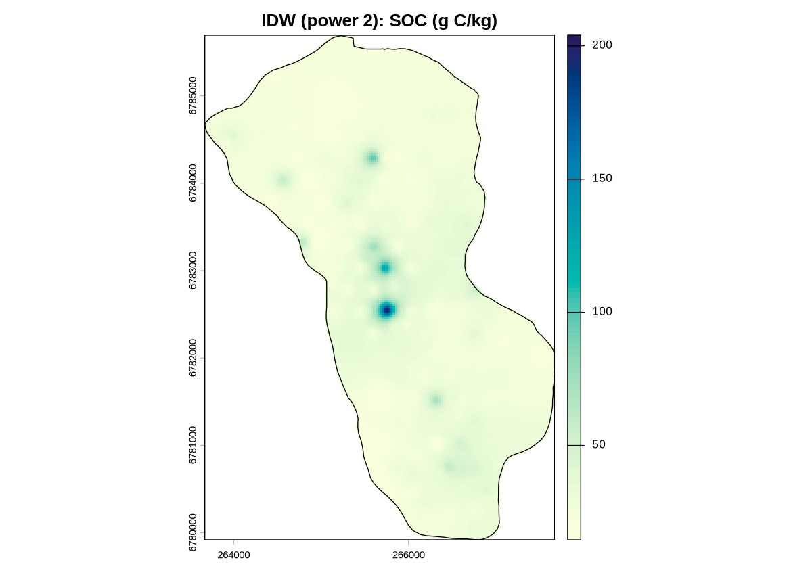
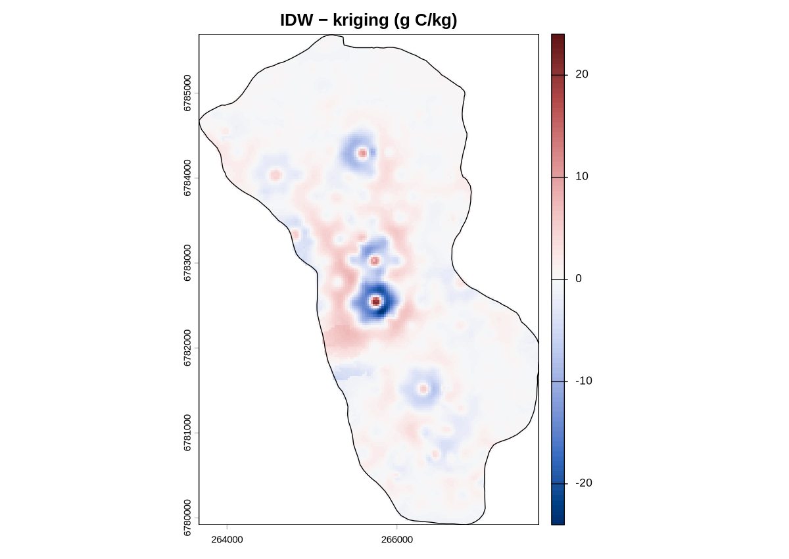
Executed R console output
mean sd min max
IDW_minus_OK_g_C_kg -0.04349021 2.651933 -24.00599 20.78802
fraction_IDW_within_OK_plus_minus_2SE
1 0.9998986
mean sd
SOC_g_C_kg 30.01263 10.620501
IDW_SOC_g_C_kg 29.96914 9.791027
A difference map measures disagreement between interpolators, not error against truth. The fraction within OK ± 2 SE therefore is not validation or measured 95% coverage. A Gaussian conditional prediction interval can be approximated by OK ± 1.96 SE only under appropriate model assumptions; the strongly skewed SOC distribution makes that approximation questionable here. Both methods smooth the observations and can miss local extremes.
8.9 · Summarise by field and export reusable rasters
Clip the supplied 2013 land-use polygons to the catchment and calculate area-weighted cell means of the kriging surface.
R code
clipped_fields <- intersect(vect(fields), vect(basin))
field_values <- extract(ok, clipped_fields, fun = mean, exact = TRUE, na.rm = TRUE)
clipped_fields$SOC_mean <- field_values[[2]]
print(summary(clipped_fields$SOC_mean))
plot(clipped_fields, "SOC_mean", col = pal, range = limits, main = "Mean predicted SOC by land-use polygon (g C/kg)")
writeVector(clipped_fields, "outputs/module-08/field-SOC-means.gpkg", overwrite = TRUE)
write.csv(as.data.frame(clipped_fields), "outputs/module-08/field-SOC-means.csv", row.names = FALSE)
writeRaster(ok, "outputs/module-08/SOC-kriging-25m.tif", overwrite = TRUE)
writeRaster(se, "outputs/module-08/SOC-kriging-SE-25m.tif", overwrite = TRUE)
writeRaster(idw_map, "outputs/module-08/SOC-IDW-25m.tif", overwrite = TRUE)
writeRaster(difference, "outputs/module-08/SOC-IDW-minus-kriging-25m.tif", overwrite = TRUE)
reopened <- rast("outputs/module-08/SOC-kriging-25m.tif")
stopifnot(compareGeom(ok, reopened))
print(max(abs(values(ok) - values(reopened)), na.rm = TRUE))
writeLines(capture.output(sessionInfo()), "outputs/module-08/session-info.txt")Why these functions? · official R help
abs()— Calculate absolute residuals and symmetric difference-map limits. In R:help("abs", package="base")as.data.frame()— Export the field attributes as a plain table. In R:help("as.data.frame", package="base")capture.output()— Capture the R session report for export. In R:help("capture.output", package="utils")compareGeom()— Verify that the reopened GeoTIFF retains the prediction grid. In R:help("compareGeom", package="terra")extract()— Compute field means with exact cell-overlap fractions used as weights. In R:help("extract", package="terra")intersect()— Clip the land-use polygons to the catchment boundary. In R:help("intersect", package="terra")max()— Check export rounding and define a symmetric difference scale. In R:help("max", package="base")plot()— Display maps, fitted variograms, histograms or validation diagnostics using the relevant class method. In R:help("plot", package="graphics")print()— Expose fitted parameters and computed numerical results rather than hiding them. In R:help("print", package="base")rast()— Create a 25 m prediction template or reopen an exported GeoTIFF. In R:help("rast", package="terra")sessionInfo()— Record R and package versions used to produce the results. In R:help("sessionInfo", package="utils")stopifnot()— Stop the analysis when geometry or numerical checks fail. In R:help("stopifnot", package="base")summary()— Report distributions of observations, standardised residuals and field means. In R:help("summary", package="base")values()— Read the raster cell values used for summaries and valid-cell indexing. In R:help("values", package="terra")vect()— Convert sf features to terra vectors for masking, plotting and field summaries. In R:help("vect", package="terra")write.csv()— Export validation metrics and field attributes for further inspection. In R:help("write.csv", package="utils")writeLines()— Save reproducibility information as a text file. In R:help("writeLines", package="base")writeRaster()— Save a georeferenced raster, including its CRS and 25 m grid, for R or QGIS. In R:help("writeRaster", package="terra")writeVector()— Save field geometries and predicted SOC means in a GeoPackage. In R:help("writeVector", package="terra")
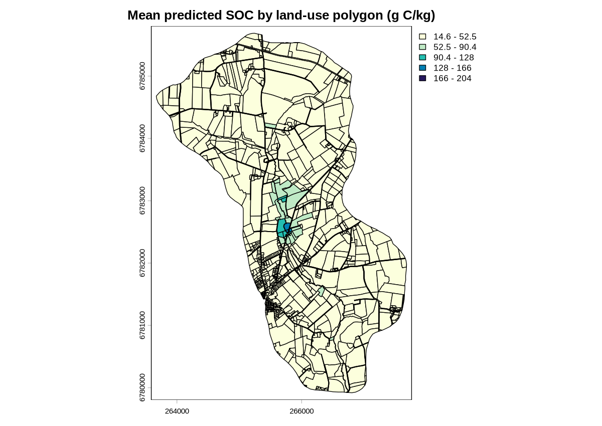
Executed R console output
Min. 1st Qu. Median Mean 3rd Qu. Max. 18.27 24.86 28.59 30.32 31.66 157.15 [1] 7.370533e-06
These are means of a predicted surface within land-use polygons, not additional measurements. They are not soil carbon stocks: stock calculations also require bulk density, depth and coarse-fragment corrections. Averaging pixel SE is not the uncertainty of a parcel mean; that requires accounting for covariance or block kriging. writeRaster saves georeferenced rasters that can be reopened in R or QGIS; writeVector preserves polygon geometry and attributes in a GeoPackage.
8.10 · Assemble the final map layout
Show observations, kriging prediction and uncertainty together. SOC panels share a colour scale; SE has its own scale.
R code
par(mfrow = c(1, 3), mar = c(3, 3, 3, 2))
plot(ok, col = "#eeeeee", legend = FALSE, main = "Observed SOC (g C/kg)")
lines(vect(basin))
point_colours <- pal[findInterval(soil$SOC, seq(limits[1], limits[2], length.out = 101), all.inside = TRUE)]
points(xy, pch = 21, bg = point_colours, col = "#555555", cex = .8)
legend("bottomright", legend = c("20", "100", "200"), pch = 21,
pt.bg = pal[c(3, 47, 98)], title = "g C/kg", bty = "n", cex = .65)
sbar(1000, type = "bar", below = "1 km", labels = c("", "", ""))
plot(ok, col = pal, range = limits, main = "Predicted SOC (g C/kg)")
lines(vect(basin))
sbar(1000, type = "bar", below = "1 km", labels = c("", "", ""))
plot(se, col = hcl.colors(100, "OrRd", rev = TRUE), main = "Kriging SE (g C/kg)")
lines(vect(basin))
sbar(1000, type = "bar", below = "1 km", labels = c("", "", ""))
par(mfrow = c(1, 1))Why these functions? · official R help
c()— Collect related values, plotting settings or raster layers. In R:help("c", package="base")findInterval()— Assign observed SOC values to the same colour intervals used for the prediction map. In R:help("findInterval", package="base")hcl.colors()— Choose perceptually organised sequential and diverging map colours. In R:help("hcl.colors", package="grDevices")legend()— Explain point symbols, reference lines and boxplot conventions. In R:help("legend", package="graphics")lines()— Draw the catchment outline over each map. In R:help("lines", package="graphics")par()— Arrange related plots on one figure and restore a single-panel layout. In R:help("par", package="graphics")plot()— Display maps, fitted variograms, histograms or validation diagnostics using the relevant class method. In R:help("plot", package="graphics")points()— Overlay sample locations on the uncertainty map. In R:help("points", package="graphics")sbar()— Draw a 1 km ground-distance scale bar for the projected maps. In R:help("sbar", package="terra")seq()— Build equal-width colour intervals over the shared SOC range. In R:help("seq", package="base")vect()— Convert sf features to terra vectors for masking, plotting and field summaries. In R:help("vect", package="terra")
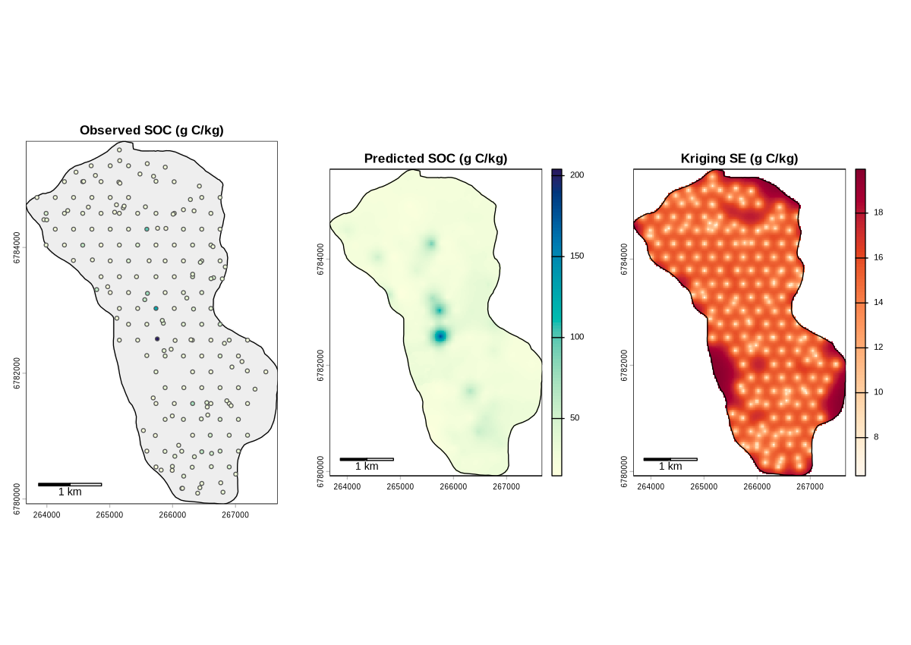
Executed R console output
All three maps refer to the same 2013 survey and catchment. The 1 km bars show ground distance in Lambert-93. The broad original-unit SOC colour range preserves the extreme observations and can compress moderate contrasts; document any narrower display limits rather than silently clipping them.
8.11 · Improve sampling and estimate a budget
Target areas with large conditional SE, gaps between observations and poorly represented land uses. Add close pairs to identify short-distance variability and the nugget. Maintain independent validation sites. Changing the model or adding relevant covariates may improve predictions more than simply shrinking the grid cells.
Build a transparent budget: total = fixed preparation cost + number of new sites × (field cost per site + laboratory cost per site) + analysis time × hourly cost. For a purely hypothetical classroom scenario, 20 sites at €40 field + €35 laboratory per site, plus €300 preparation and 8 h at €45/h, give €2,160. These are exercise assumptions, not supplier quotations. Assess expected information gain before choosing the number of sites.
Questions to discuss
- What evidence would justify investigating the highest SOC values?
- How do 125 m and 500 m lag widths change the variogram and pair counts?
- Why does a 25 m grid not imply 25 m measurement support?
- Which validation design matches filling gaps, and which matches prediction into a new sector?
- Why is IDW–kriging disagreement not prediction error?
- Why does a field-average carbon concentration not give a carbon stock?